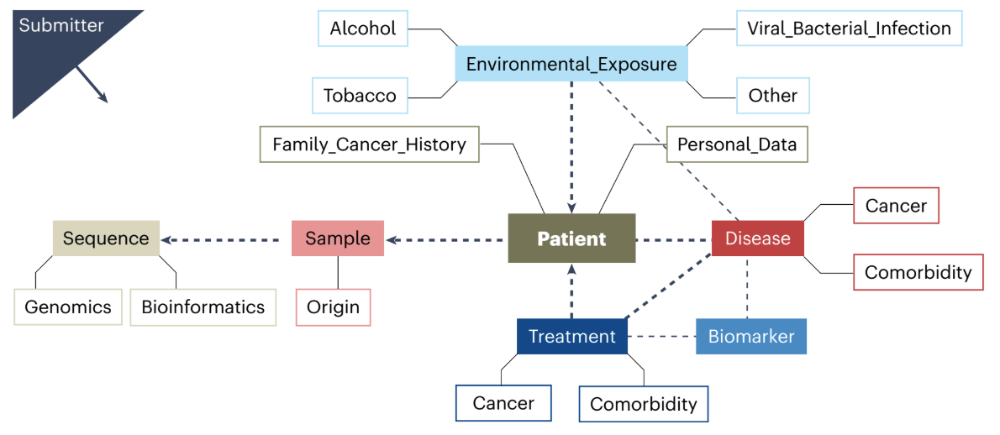

TL;DR
The integration of genomic and clinical data is essential for advancing precision cancer medicine, yet establishing standardized data collection practices remains a significant challenge. This work introduces the 1+Million Genomes Minimal Dataset for Cancer, a comprehensive framework comprising 140 items across eight domains, designed to facilitate the structured collection and interoperability of cancer-related genomic and clinical information across Europe.
The Full Story
The Hook
Imagine a world where cancer treatment is as personalized as a tailored suit, fitting each patient’s unique genetic profile. This vision is becoming a reality with a new initiative that standardizes how we collect and share cancer data across borders.
The Big Idea
The core concept is to create a unified system for collecting cancer data, making it easier for researchers and clinicians worldwide to collaborate and develop personalized treatments, ultimately improving patient outcomes.
How It Works
The initiative involves creating a structured dataset that organizes cancer-related information into categories like patient demographics, treatment details, and genetic data. This standardized approach ensures that data from different countries and institutions can be easily shared and analyzed, much like having a universal language that everyone can understand and use effectively.
The Plot Twist
While many might assume that collecting cancer data is straightforward, the reality is that data privacy, varying data formats, and inconsistent collection methods have been major hurdles. This initiative tackles these challenges head-on, paving the way for more seamless data integration and collaboration.
Why Scientists Care
Scientists and healthcare professionals are keenly interested in this initiative because it promises to break down barriers to data sharing, enabling more comprehensive research and the development of targeted cancer therapies. By fostering international cooperation, the dataset has the potential to accelerate discoveries and innovations in cancer treatment.
Why should non-scientists care?
Non-scientists should care because this initiative has the potential to significantly improve cancer treatment and patient outcomes by making personalized medicine more accessible. By standardizing how cancer data is collected and shared, it enables faster and more effective research, leading to treatments that are better tailored to individual patients’ needs. This means that in the future, cancer care could be more precise, effective, and potentially less invasive, benefiting patients and their families worldwide.
The BioLogical Footnote
The quiet infrastructure question
Most breakthroughs in precision medicine do not fail because of a lack of algorithms or ambition. They fail because the data beneath them is fragmented, incompatible, or simply unusable. The 1+Million Genomes Minimal Dataset is not glamorous, but it is foundational. It forces us to ask a simple, uncomfortable question: are we investing enough attention in the invisible layers that make scientific progress possible? Because without shared data foundations, even the most advanced medicine remains an isolated achievement.
Behind every dataset is a patient story, often shared only once and never repeated. When data cannot travel, neither can its impact. This initiative quietly shifts the focus from isolated excellence to shared progress. And it leaves us with a thought worth sitting with: how many potential discoveries are still locked away, not because the science is lacking, but because the data cannot speak the same language?